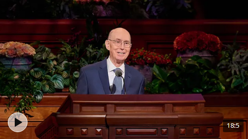

"Our Constant Companion", Elder Henry B. Eyring of The Church of Jesus Christ of Latter-Day Saints
This talk describes how we can have the Holy Ghost to be our constant companion to help us through life.
“And now as I said concerning faith—faith is not to have a perfect knowledge of things; therefore if ye have faith ye hope for things which are not seen, which are true.”
-Alma 32:21